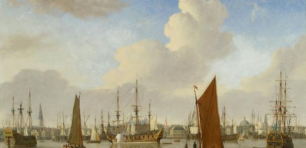

Interactive tour
Step into a virtual tour Through het Scheepvaartmuseum.

Step into a virtual tour Through het Scheepvaartmuseum.

The Amsterdam port city exhibition shows the age-old relationship between the port and the city, from the moment a dam was built in the Amstel until the future.
The exhibition 'the story of the whale' shows how we have watched the whale through the ages. You will learn about whaling and how it has made whales an endangered species.

The Maritime Museum presents a unique large retrospective about father and son Willem van de Velde, two leading sea painters in the seventeenth century, each with their own specialism: pen painting and oil painting.

The Republic by the Sea exhibition shows how the Netherlands was formed as a maritime nation. On the basis of more than 50 masterpieces, the exhibition tells the story of the Republic in the 17th and 18th centuries. The Main Gallery is the starting point for a museum visit.

Bert Hammers says: “Intresting and interactive museum. A fun area for kids located at the whales. The VOC is very accessible with lots of interactive pieces. Het museum is mooi ingedeeld volgens de windstreken. Zeer leerrijk. Voor een groot publiek toegankelijk.” 5 stars
Arthur v zegt: “A very nice museum with a beautifull and intresting collection. It gives a good image about the history of the shipping in the Netherlands. Especialy the ships outside are nice to visit.” 5 sterren
The Scheepvaartmuseum is a Dutch museum in Amsterdam that tells the story about the shipping and maritime history. The Maritime Museum, formerly known as the “Nederlands Scheepvaartmuseum Amsterdam”, was originally founded in 1916 by the owner of one of the most prominent maritime collections in the world. Since 1973, the museum has been located in 's Lands Zeemagazijn on the Oosterdok near the ij in Amsterdam. Crown Princess Beatrix reopened the museum in April of that year at the new location. During a major renovation between 2007 and 2011, the museum was closed to the public. After the major renovation, the museum opend its door to the public again which was around October 2011. The replica of the East Indies sailor Amsterdam has since been back on the jetty at the Scheepvaartmuseum.